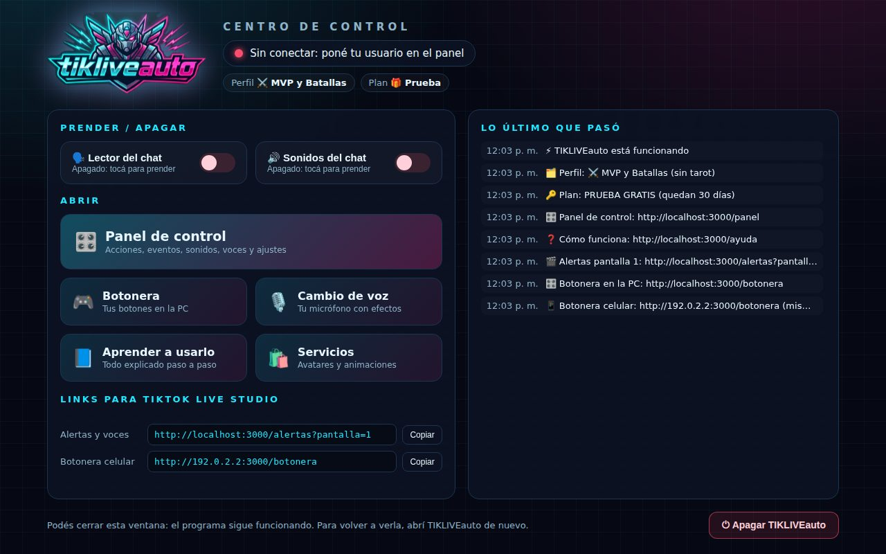
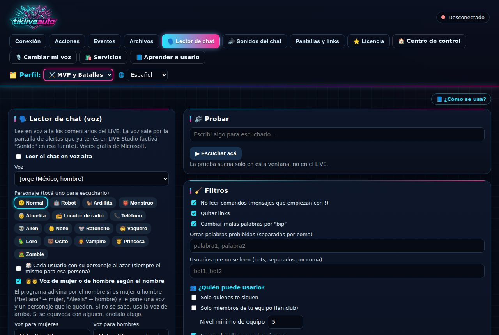
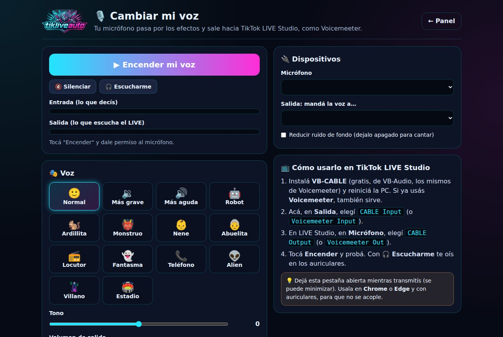

Tu TikTok LIVE, con vida propia
Alertas con videos cuando te mandan regalos, una botonera para disparar todo con un toque, el chat leído en voz alta, sonidos, cambio de voz y tu marca en pantalla. Todo en un solo programa.
Para Windows 10 y 11 · Funciona con TikTok LIVE Studio · Sin tarjeta para la prueba

Todo lo que necesitás para tu LIVE
Se conecta a tu LIVE y reacciona solo a regalos, comentarios, seguidores y likes.
Alertas por regalo
Cada regalo dispara tu video, imagen o sonido. Quita el fondo verde o azul solo (chroma), como en OBS.
Botonera
Tus propios botones en la PC o en el celular, con fotos y colores. Tu Stream Deck, gratis.
Lector del chat
Lee los comentarios en voz alta con 16 personajes. Voz de mujer u hombre según el nombre, sin emojis.
Sonidos del chat
Tu público escribe !risa o !aplausos y suena en el LIVE. Subí tus propios sonidos.
Cambio de voz
Tu micrófono con efectos en vivo, estilo Voicemeeter. Compatible con consolas como la Yamaha AG06.
Tu marca en pantalla
Un marco con tu logo o el de tu empresa, siempre visible en el LIVE.
Vos decidís quién
Lector y sonidos solo para seguidores, miembros de tu equipo desde cierto nivel o moderadores.
Potenciadores de batalla
Cuando en una batalla tiran un guante, neblina, martillo, x2 o x3, la animación sale sola. No hay que configurar nada.
11 robots incluidos
Una animación con fondo transparente y sonido para cada potenciador, lista para usar. Snipe e impulso musical, a un toque.
Sonido directo
En batallas y vivos en conjunto, todo suena por la PC: fuerte y parejo, igual que la música.
Guía paso a paso
Un PDF con capturas para empezar desde cero, y la ayuda completa adentro del programa.
Simple y liviano
Se instala en un minuto, trae todo incluido y se actualiza solo. Un solo link en LIVE Studio.
Así se ve
Un Centro de control claro, todo en español y con una guía paso a paso adentro.


Empezás en 3 pasos
Sin saber de programación.
Creá tu cuenta
Con Google o con tu email. Tenés 1 mes con todo, gratis.
Descargá e instalá
Un instalador para Windows. Trae todo lo necesario.
Pegá un link en LIVE Studio
Copiás el link desde el programa, lo agregás como fuente y listo.
Planes
Probalo gratis un mes con todo. Después elegís.
Gratis
- 10 acciones y 10 eventos
- 10 botones en la botonera
- 1 pantalla de alertas
- Lector del chat con voz normal
- Hasta 5 sonidos del chat
- Robots de potenciadores (menos el guante dorado)
- Personajes del lector
- Voces de IA para el chat
- Sin la marca "Hecho con TIKLIVEauto"
Premium
- 100 acciones y 100 eventos
- 100 botones y todos los estilos
- 8 pantallas de alertas
- Los 16 personajes del lector
- Voces de IA para el chat
- Hasta 50 sonidos del chat
- Todos los robots, con el guante dorado
- Potenciadores con tu propia animación
- Sin marca en pantalla
A medida
- Avatar personalizado para tu LIVE
- Animaciones para tus MVP y guantes (desde 15 USD)
- Pago único
- Atención por WhatsApp
Preguntas frecuentes
¿Necesito saber de computación?
No. Se instala como cualquier programa y adentro tiene una guía paso a paso con ejemplos.
¿Funciona con TikTok LIVE Studio?
Sí. El programa te da un link que agregás como fuente en LIVE Studio. Por ese link salen las alertas, las voces y los sonidos.
¿Necesito Tikfinity u otro programa?
No. TIKLIVEauto se conecta directo a tu LIVE. Si alguna vez falla, puede usar Tikfinity como respaldo.
¿Qué pasa cuando termina el mes gratis?
Seguís usándolo gratis con menos funciones, o pasás a Premium por 12 USD al mes (o $ 500 uruguayos con Mercado Pago). Al terminar la prueba no se te cobra nada: solo pagás si vos elegís suscribirte.
¿Windows me muestra "Windows protegió su PC"?
Es normal en programas nuevos. Tocá "Más información" y después "Ejecutar de todas formas".
¿Las voces son de famosos?
No. Son personajes originales con voces de Microsoft. Imitar voces de famosos o personajes con dueño no está permitido y TikTok puede sancionar el LIVE.